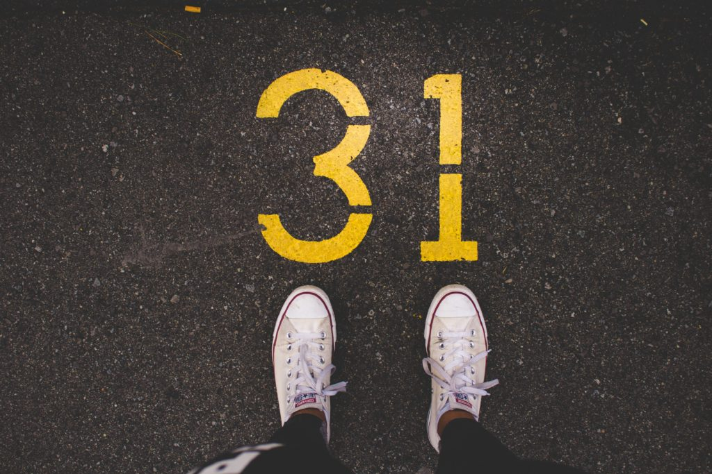
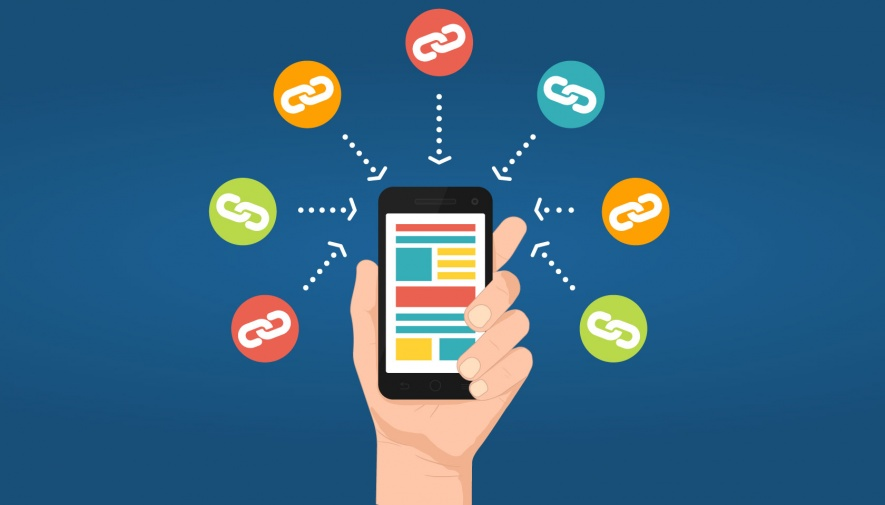

Author ~ Melissa Slavsky
A Consumer’s Shopping Journey is a lot like a shoe: It’s not one size fits all. Each one of us bases our purchasing decisions on different things. Some of us are company and brand loyalists, so our decision path is quite short. Some prefer to only purchase what is on sale, regardless of the brand, which makes for a longer path to purchase. There are even some of us who make purchase decisions based on environmental impact. Whichever group we fall into, as consumers, we all go on a journey deciding what, where and how to purchase a product.
Now, imagine for a moment, you are an early 30-something and you love to run.

It’s Saturday afternoon and you just completed your fifth marathon. You are exhausted, but so proud of yourself. Your whole body aches, especially your feet. You know it’s time for a new pair of shoes because you’ve crossed over 450 miles in your current running shoes with this last 26.2 miles.
Before you drop $120, you need to do some research. You decide to start your search for your next pair of running shoes through a basic Google search. In the U.S., 92 percent of millennials start their journey to finding what they need by accessing Google.
You type in search terms such as “best running shoes for long distances,” “top running shoe brands for distance running,” etc. These searches automatically lead you to manufacturer and brand websites, which is the next step for 82 percent of millennials when searching for a new product. You click on the Nike link, then Asics, then check out New Balance and finally Brooks. You’ve heard good things about Brooks and find a pair of shoes that match what you like in a running shoe. But … do they live up to the hype?

With 78 percent of men and women your age looking at reviews on retailer sites and 69 percent checking out reviews on user-generated content sites during their shopping journey, the next step is clearly to read product reviews. There are some great reviews for the shoes you want, so you’re feeling pretty confident in your choice. However, there is one more place you want to research: YouTube.
Sixty-seven percent of millennials include YouTube as part of their purchasing journey. You find a few videos of runners commenting on Brooks during their runs. Feedback about the shoes in use will be very helpful in making your final decision. The videos you find offer rave reviews. You think you’ve found your match. Now it’s time to try them on.
Your journey for the perfect running shoe may have taken some work, but it was worth it, because you found what you were looking for. You found YOUR shoes. Time to sign up for your next race!!
What does your journey look like when you’re intentionally looking for your next great “pair of running shoes?”
Make sure to ask the Get Lagos Now Team because the NOW and EFFECTIVE research and destination is always changing and how your business is found will be too…